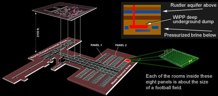
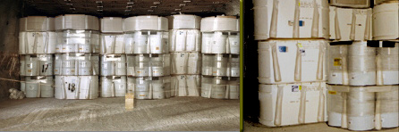
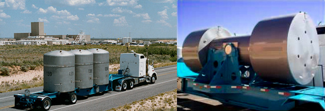
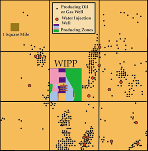
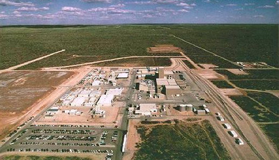

| 
WIPP, under the Rustler aquifer. Eight "panels" are made up of six giant storage rooms. Each room in a panel is about the size of a football field. |
| 
The small bags hanging from the waste canisters contain magnesium oxide, which is used to absorb water. Despite denying any presence of water at the site, WIPP staff have also been spotted online seeking vendors for water wall shields to emplace along the walls and guide water into floor canals. |
| 
The transport containers on the left, called TRUPACTs, have been travelling over Texas highways to WIPP since 1998. RH-72's containers (on the right) resemble high-level waste casks and contain remotely-handled transuranic waste (RH-TRU), will be added to the transport routes in 2003. |
|  |
Drilling Hazards at WIPP Dozens of oil and gas wells are within 2 miles of the WIPP site boundary. If drilling for proven reserves of oil and gas hits the waste rooms, massive amounts of radioactivity will come to the surface. For example, drilling with air compressors can release enough radioactivity to violate health and safety standards within 10 seconds. Future drilling could additionally bring radioactive brine to the surface and into the upper aquifer, which would flow into the Pecos River and the accessible environment. Companies also inject fluid to increase oil production. Fluids have moved for miles through the interbeds, and scientific studies show that large amounts of waste could be transported offsite, even if the injection occurs outside of the site boundary. |
|  |